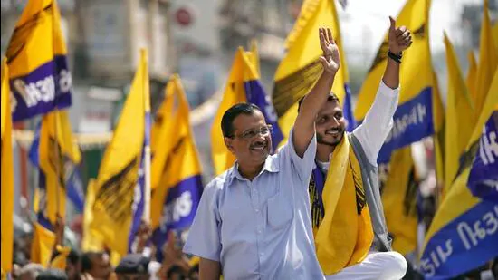

The AAP has sought to project itself as the main challenger to the ruling BJP, which has been in power in Prime Minister Narendra Modi and Union home minister Amit Shah’s home state for 27 years
“Aam Aadmi Party (AAP) chief Arvind Kejriwal has held around a dozen roadshows in Gujarat’s Saurashtra and Kutch regions alone ahead of assembly polls next month and named Isudan Gadhvi the party’s chief ministerial candidate. The party claimed to have received over 1.6 million recommendations for its “choose the chief minister” campaign as it seeks to expand its influence beyond its strong
The AAP has also sought to project itself as the main challenger to the ruling Bharatiya Janata Party (BJP), which has been in power in Prime Minister Narendra Modi and Union home minister Amit Shah’s home state for 27 years.
But both Congress and the BJP have been dismissive of the AAP. Shah this week maintained the electoral contest was only between Congress and the BJP. He noted the BJP has not lost assembly or national elections in Gujarat since 1990.
On October 31, Rahul Gandhi also brushed aside the hype around the AAP’s prospects in Gujarat, saying it was being created on the basis of advertisements without any actual support. “The Congress is actively contesting the Gujarat elections and is bound to win. ...It [AAP] has nothing on the ground.”